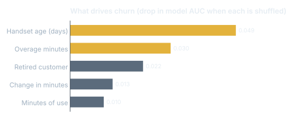

S-Mobile Churn and Retention Plan
Customer Analytics, team project (Group 30).
Marketing analyticsCompleted
01Problem
A mobile carrier losing about 2% of subscribers a month needed to know who will leave and what offer would keep them.
02Approach
Random forest (AUC 0.711) vs logistic regression (0.686), predictions calibrated to the real 2% churn rate, then permutation importance and partial dependence to find drivers.
03Impact
Handset age and overage charges drive churn most, so the plan targets handset upgrades and overage caps at high-risk customers, valued against a 5-year customer lifetime value of about SGD 1,000.
Results

What I did
- Sized each offer for a 1 million subscriber base with cost, churn reduction and breakeven per customer.
- Targeted offers only at the highest-risk deciles with the matching problem (for example, old handsets).
Tools
PythonRandom forestPartial dependence